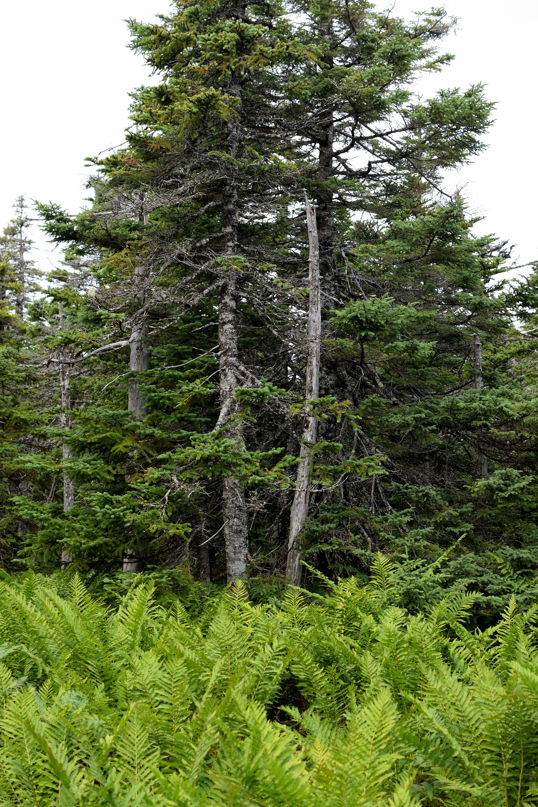
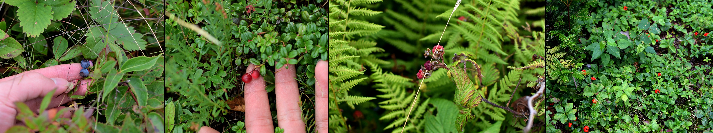

Above: A large lobster caught off the coast of PEI, which was then brought to Charlottetown. This lobster was not sold (to be eaten) due to it's size.
Above: A large lobster caught off the coast of PEI, which was then brought to Charlottetown. This lobster was not sold (to be eaten) due to it's size.
Main Page | Climate | Geographic History | Geological Landforms | Wildlife and Vegetation | Human Activity | Tourism | Bibliography
The Atlantic Maritime Ecozone is home to many diverse ecosystems and has a wide variety of both flora and fauna. The AME is home to softwood trees such as: red spruce (Picea rubens), white pine (Picea glauca), red pine (Pinus resinosa) and hardwood trees such as: sugar maple (Acer saccharum), Yellow birch (Betula alleghaniensis), Red oak (Quercus rubra), American beech (Fagus grandifolia). Common plants found in the Atlantic Maritime Ecozone includes: blueberry, sphagnum moss, smooth serviceberry, cranberries, wild lupins, pitcher plants, and ostrich ferns. Also, the AME is home to the Acadian forests. These forests are very mature (old), and dense, consisting of a mix of both hardwood and softwood species.
 Above: Typical vegetation that can be found in the highlands of the Atlantic Maritime Ecozone. The spruce trees in the foreground are most likely to be red spruces. Much of the ground cover consists of ostrich ferns. Did you know that the young shoots ("fiddleheads") of the ostrich fern can be eaten?
 Above: Common edible wild berries found in the Atlantic Maritime Ecozone. Left to right: blueberry, cranberry, raspberry, bunchberry.
Common animals found in the AME includes whitetail deer and the moose. There are only three large predators: the lynx, the bobcat, and the black bear. Other common animals that thrive in the AME includes red foxes, minks, river otters, martens (similar to weasels and stoats), muskrats, raccoons and striped skunks. Coastal areas of the AME are home to a wide range of aquatic mammals, including harbour seals, gray seals, hooded seals, harp seals, orcas, and blue whales. The AME is also know for it's many lobster, crab, and shrimp fisheries, found off the coasts, in the Atlantic Ocean.
Above: A large lobster caught off the coast of PEI, which was then brought to Charlottetown. This lobster was not sold (to be eaten) due to it's size.
Thanks for reading!
Return to the top of the page.
© Trevor Li 2018, all rights reserved. All images by Trevor Li unless noted. Background image by the Lubuntu Artwork Team